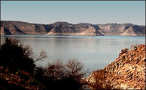

|
Aswan High Dam
A dam built in the 1960s to control the annual flooding of the Nile, and to create a reservoir.

Lake Nasser
The water flowing from the Nile sources collects south of the dam forming Lake Nasser. Lake Nasser covers much of the area that was ancient Nubia.
Close
|